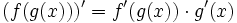
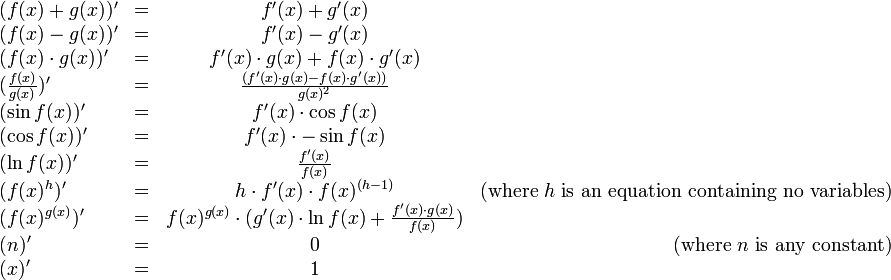

In this assignment, you will be given the opportunity to practice with higher order functions in Ocaml via map, reduce, and filter. You will also write your own language for symbolic differentiation using OCaml. Through this practice you will exercise important features of functional languages, such as recursion, pattern matching, datatypes, list processing, etc., not to mention the ability to design your own mini-language.
To begin, download the assignment tarball, and extract it. For this assignment, you will be working on two different files:
mapreduce.ml contains declarations for each of the functions that you will implement in Part 1.
expression.ml contains support code to help you complete your task,
in addition to declarations for the functions that you will implement in Part 2.
As in the previous assignment, all of your programs must compile. Programs that do not compile will receive an automatic zero. Make sure that the functions you are asked to write have the correct names and the number and type of arguments specified in the assignment. Finally, please pay attention to style and follow the style guidelines posted on the course web site. Think carefully before writing the code, and try to come up with simple, elegant solutions.
Mapping, folding, and filtering are important techniques in functional languages that allow the programmer
to abstract out the details of traversing a list. Each can be used to accomplish a great deal with very little code.
In this part, you will get practice with higher-order functions by using map and fold to write a number of functions.
map is implemented in Ocaml by the function List.map.
filter is implemented in Ocaml by the function List.filter.
fold is implemented in OCaml by the function
List.fold_right.
However, the library function has its arguments out of order (see the lecture slides).
Thus, we have provided you with the function "reduce" which computes identically to fold_right
but takes arguments in a different order (more later on why this is important).
1.1. As a quick comprehension check, you should:
reduce using List.fold_right. negate_all : int list -> int listnegate_all [2;0;-4] = [-2;0;4].
sum : int list -> intsum_rows : int list list -> int list. sum_rows [[1;2]; [3;4]] = [3; 7].
filter_odd : int list -> intfilter_odd [1;4;5;-3] = [1;5;-3].
num_occurs : int list -> int -> intnum_occurs [1;3;4;5;4] 4 = 2.
super_sum : int list list -> intsuper_sum [[1;2;3];[];[5]] = 11.
filter_range : int list -> int * int -> int listfilter_range [1;3;4;5;2] (1,3) = [1;3;2].
floats_of_ints : int list -> float list. floats_of_ints [3;6;2] = [3.0;6.0;2.0].
optionalize : 'a list -> 'a option list. optionalize ["foo"; "bar"] = [Some "foo"; Some "bar"].
some_sum : int option list -> int None values.some_sum [Some 2; None; Some 6] = 8.
deoptionalize : 'a option list -> 'a listSome values,
ignoring any None values.
For example, deoptionalize [Some 3; None; Some 5; Some 10] = [3;5;10].
mult_odds : int list -> int 1.mult_odds [1;3;0;2;5] = 15,
and mult_odds [2] = 1.
concat : 'a list list -> 'a listList.concat method in the Ocaml library.
For example, concat [[1;2;4];[];[1;5]] = [1;2;4;1;5].
filter_by_year : student list -> year -> name liststudent, returns a list of the names of the students in a given year.
In the Summer of 1958, John McCarthy (recipient of the Turing Award in 1971) made a major contribution to the field of programming languages. With the objective of writing a program that performed symbolic differentiation of algebraic expressions in a effective way, he noticed that some features that would have helped him to accomplish this task were absent in the programming languages of that time. This led him to the invention of LISP (published in Communications of the ACM in 1960) and other ideas, such as list processing (the name Lisp derives from "List Processing"), recursion and garbage collection, which are essential to modern programming languages, including Java. Nowadays, symbolic differentiation of algebraic expressions is a task that can be conveniently accomplished on modern mathematical packages, such as Mathematica and Maple.
The objective of this part is to build a language that can
differentiate and evaluate symbolically represented mathematical expressions
that are functions of a single variable.
Symbolic expressions consist of numbers,
variables, and standard math functions (plus, minus, times, divide, sin, cos, etc). To get you started, we have provided
the datatype that defines the abstract syntax for such expressions in expression.ml.
Instructions: Change to the directory where you saved the file expression.ml. In the OCaml environment type:
#use "expression.ml";;
to start using the datatype.
(* abstract syntax tree *) (* Binary operators. *) type binop = Add | Sub | Mul | Div | Pow ;; (* Unary operators. *) type unop = Sin | Cos | Ln | Neg ;; type expression = | Num of float | Var | Binop of binop * expression * expression | Unop of unop * expression ;;
Var represents an occurrence of the single variable,
which we usually call "x". Unop(Ln, Var) represents the natural logarithm of x.
Neg is negation, and is denoted by the "~" symbol
("-" is only used for subtraction). The rest should be
clear what they refer to.
Mathematical expressions can be constructed using the
constructors in the above datatype definition. For example, the expression
"x^2 + sin(~x)" can be
represented as:
Binop(Add, Binop(Pow, Var, Num(2.0)), Unop(Sin, Unop(Neg, Var)))
This represents a tree where nodes are the type constructors
and the children of each node are the specific operator to use and the arguments of that
constructor. Such a tree is called an abstract syntax tree (or AST for short). For
your convenience, we have provided a function parse which
translates a string in infix form (such as "x^2 +
sin(~x)") into an expression (treating
"x" as the variable). The parse function parses
according to the standard order of operations - so
"5+x*8" will be read as
"5+(x*8)".
We have also provided functions to_string and to_string_smart that print
expressions in a readable form, using infix
notation. The function to_string adds parentheses
around every binary operation so
that the output is completely unambiguous — however, that output
is often hard to read. The function to_string_smart
only adds parentheses when there may be ambiguity.
let e = Binop(Add,Binop(Pow,Var,Num 2.0),Unop(Sin,Binop(Div,Var,Num 5.0))) to_string(e) = "((x^2.)+(sin((x/5.))))" to_string_smart(e) = "x^2.+sin(x/5.)"2.1. Contains Variable
First, we want to be able to test whether an
expression contains a variable. This will be useful later. Your task is to implement a
function containsVar that takes an expression
e and returns true if there is a Var anywhere
in e, and false otherwise. The type of this function is expression -> bool.
Second, we want to be able to evaluate expressions for
specific values of x. For example, suppose we wanted to evaluate
e = x^2 + 3.0*x +2.0 with x = 5.0. Then the result of the
evaluation of e at x is 5.0^2 + 3.0*5.0 + 2.0 = 42.0.
Your task is to implement an evaluation
function evaluate that takes an expression
e and a float x,
representing the value of the single variable, and evaluates
e to a floating point number. The type of
this function is expression -> float -> float.
Next, we want to develop a
function that takes an expression
e as its argument and returns an expression
e' representing the derivative of the expression with
respect to x. This process is referred to as symbolic differentiation.
When implementing this function, recall the chain rule from your freshman Calculus course:

And recall how, using that, we can write the derivatives for the other functions in our language:

Note that there two cases provided for calculating the derivative of f(x) ^ g(x),
one for where g(x) = h does not contain any variables, and one for the general case.
The first is a special case of the second, but it is useful to treat them separately, because when the first case applies, the second case produces
unnecessarily complicated expressions.
Your task is to implement the derivative function.
The type of this function is expression -> expression.
The result of
your function must be correct, but need not be expressed in the simplest form.
Take advantage of this in order to keep the code in this part as short
as possible. You can implement this function in as little
as 20–30 lines of code.
To make your task easier, we have provided an outline of the function,
with many of the cases filled in. The portions of the function that require your attention read raise (Failure "Not implemented"). Do not attempt to run the function until you have replaced all of the raise statements with valid code.
One application of the derivative of a function is to find zeros of a function. One way to do so is Newton's method. The function should take an expression, a starting guess for the zero, a precision requirement, and a limit on the number of times to repeat the process. It should return None if no zero was found within the desired precision by the time the limit was reached, and Some r if a zero was found at r within the desired precision.
Your task is to implement the find_zero:expression ->
float -> float -> int -> float option function. Note that there are
cases where Newton's method will fail to produce a zero, such as for
the function x1/3. You are not
responsible for finding a zero in those cases,
but just for the correct implementation of Newton's method.
Clarification (updated): If the expression that find_zero
is operating on is 'f(x)' and the precision is
epsilon, we are asking you to find a value
x such that |f(x)| < epsilon. That is, the
value that the expression evaluates to at x is "within
epsilon" of 0.
(We are not requiring you to find an x such that |x -
x0| < epsilon for some x0 for
which f(x0) = 0.)
This part is a karma problem that is not required for the problem set. It is included as a avenue for students to further explore issues associated with symbolic differentiation and the representation of expressions. We will grade it if you do it; you will receive no points but good karma if you do well.
Consider the application of the derivative
function to the expression x^2+sin(2*x) and the corresponding output:
to_string_smart(derivative(parse "x^2+sin(2*x)")) =
"2.*1.*x^(2.-1.)+cos(2.*x)*(2.*1.+0.*x)"
This expression appears very complicated.
However, it can be
greatly simplified to "2*x+cos(2*x)*2". We can
reduce this using various elementary
simplifications.
Two basic types of reductions can be performed. The first and more obvious is to carry out operations that we have a simplified form for. One such simplification is carrying out arithmetic on constants: if we have two constants that are being added, multiplied, etc., we can reduce them to the result. Additionally, some operations have predefined results for certain constants, or when the operands are equal. We could perform reductions for other values of ln, sin, and cos, but it is not advisable to do so, as there can be a loss of precision. We expect you to implement the following simplifying reductions:
The second type of reduction is to group similar operations, and move negations
to the outside (as there are few real simplifications we can do when negation is involved,
but many we can do with the other operations). In and of themselves, these reductions
don't do very much; their true power is allowing us to apply other reductions. One of these
reductions is to transform all negative constants into the unary operator negation applied
to a positive constant. For example, consider (-1)*f.
With the above reduction, it
will be converted to (~1)*f, and then other reductions will
will convert it to ~(1*f) and then ~f. Note that we write -n for an actual negative
constant (i.e., Num(-5.0),
and ~n for the unary operator negation applied to something (i.e., Unop(Neg,Num(5.0))).
We expect you to implement the following reductions:
It is worth noting that applying one reduction to an expression may
result in being able to apply another. One implication of this is that subexpressions
must be reduced first. For example, to fully reduce
x + (sin(x)−sin(x)), you must first reduce sin(x)−sin(x) to 0,
transforming the expression to x+0, then reduce x + 0 to x.
Further, note that as in the (~1)*f example above, you may need to apply multiple
reduction rules in sequence to an expression.
Your task is to implement a function simplify that
performs all these reductions. The type of this function is expression
-> expression.
nice.fas.harvard.edu. Make sure
you get both of the ml files!
make check. If it complains about lines > 80
lines, fix them. If it doesn't want to run, please let us
know -- we're trying to track down this problem, and haven't been able
to reproduce it on our own accounts yet.
make submit. If it complains, post to the BB,
pasting in the output.